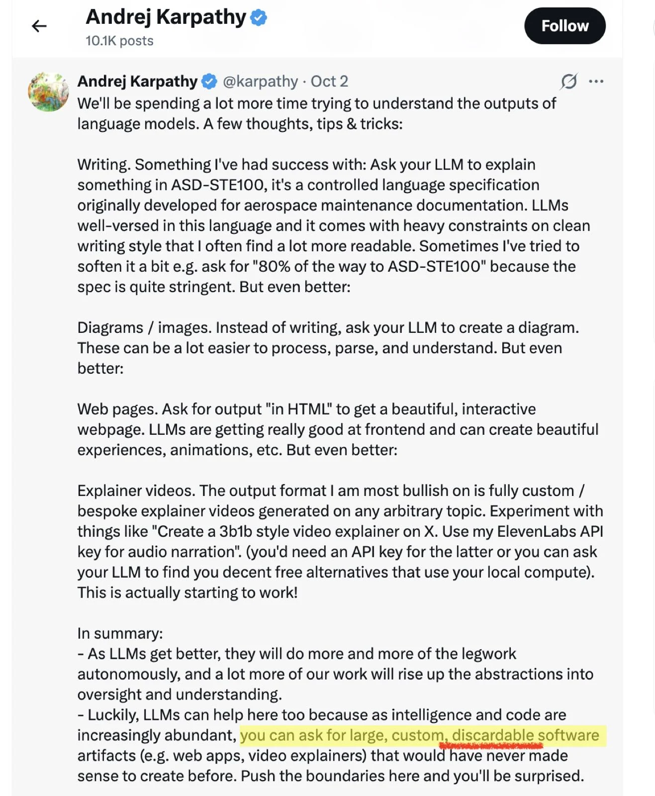
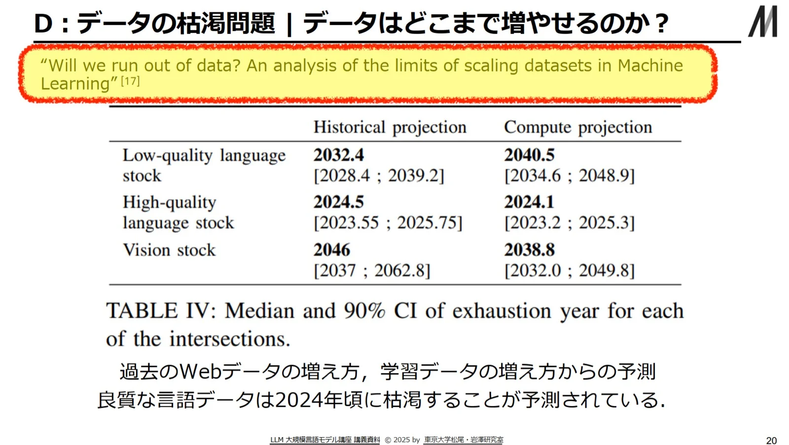

系列 WORKSHOP・第一堂
拆開任務：
好學生筆記與四象限
讓扎實的學習回到完整
系列 WORKSHOP・第一堂
讓扎實的學習回到完整
JACK BUTCHER
同一個畫面，切成兩半。
沒有對錯，只有選擇。
先看成果
同一段三分鐘閃講，右側逐字稿跟著聲音走。請同時感受兩種輸入。
大家好，我是江碩濤。
因為今天的場子，我是來自中鼎工程，我們是在做比較大型的工程顧問開發的公司。
我想在 Claude code 的應用上面，今天想要把這個好學生筆記分享給大家，這是我自己做的一個學習的專案。
想把這個分享給大家。同學只要把這個簡報連結點開，它就是一個連結，未來所有裡面的東西都是開源，可以直接使用的。
這樣子的一個工具的使用上面，其實我把它分成四個大項目來跟大家討論。
因為從剛剛 Hana 的簡報以及前面很多三講的三位四位的好朋友，他們都有提到，就是在 Claude code 的應用上面，或者是大型語言模型的應用上面，
在去年開始就有所謂的 tool use 的部分。這個東西就是要麻煩兩位老師在未來跟同學之間互動。
我覺得 Git 是一個很重要的入門磚。也就是說，所有的開源的東西，我們要讓同學知道不要一股腦去做輪子，
反而是要如何在 Git 上面去拿到別人，站在巨人的肩膀上面去找到輪子。
那像剛剛 Hana 也有提到一些 skill 的應用上面呢，那我們如何去篩選好的 skill 呢？
其實是從 Git 上面被 fork 以及被 star 的數量，然後去找到更好的資源，
然後透過 Claude 裡面有一個叫做 plan mode 的方式，你可以在它的按 shift 的部分去做切換。Claude 在做所謂的計劃行為上面，它是一個相當有優勢的前端工具，可在 tool use 上使用。
第二是大語言模型，能夠做文字拼接。
我相信大家在這兩三年的應用上已經非常有心得了。
再來就是 agent，所有同學在使用東西中會去把工作做切分。
善用 agent 以及善用所謂的 co-work，是一個很重要的工具的做法。
那如果你有到簡報裡面，你可以去點右邊這個開源的小工具。
我們所謂在把好學生筆記上面，當中的「筆記」其實在談的事情呢，是快速地去簡化以及去做摘要。
而這個筆記最大的不一樣是，它去做完整的逐字稿的拼接。
也就是像我們今天剛剛有三場的簡報，我認為每一個人的簡報裡面每一個字都是精華。
甚至我對每一個人的頓點，都應該要被記錄下來。
好學生筆記它會透過這樣子的一個做法，去把所有的東西做一個完整的記錄。
大家可以回去試試看，上面有一個很好的做法。
那我想說提供給同學們，或者是在用 Claude code 的人的一種經驗上面分享，就是第一個，善用終端機。
因為終端機是一個唯一可以讓你進入到你的電腦裡面去做事的一個工具。
第二個就是學會分解你的任務。
很多人都在學 prompt engineer，但是我建議的做法有點像剛剛有台下的朋友提出的，用錄音的方式。但你用錄音的方式來跟你的同學做對話的時候，你在跟人的對話裡面就是最好的 prompt。
這就是我給大家最好的建議。就這樣，以上這兩個會有特別的訣竅。謝謝。
兩個訊號


FASTER vs. DEEPER
學習不是往更有效率邁進，
而是往更具體、學得到、學得好。
COMPRESSION vs. RESTORATION
大多數人要求 AI 摘要，
把牛排打成肉泥。
我要求 AI 縫合，
還原語氣與靈魂。
先聽一句話
HEARD vs. SAID
「這個你們再看看，
原則上應該可以。」
SPEED vs. RETENTION
真正的效率不是讀得快，
而是忘得慢。
今天的 AI 是誰
CHAT vs. PROJECT
把 AI 帶進你的電腦，
一個專案，一個包裹。
SUBTITLES vs. A TEXT YOU CAN READ
不做重點。
不做摘要。
只讓逐字稿「好讀」。
AN END vs. A WAY IN
重點，可以是回到原文的入口。
MIXED vs. APART
FUNCTION CALL vs. LANGUAGE MODEL
ONE-SHOT vs. PHASES
好學生筆記的分工
| 階段 | 誰做 | 交出什麼 | 下一步先確認 | 今天 | |
|---|---|---|---|---|---|
| 1 | 聲音變成字幕 | ■ 工具：語音轉文字 | 帶時間軸的字幕 | 講者姓名、專有名詞 | 示範 |
| 2 | 翻譯成雙軌字幕 | ■ 腳本鎖時間軸 ● LLM 只翻文字 | 雙軌字幕 | 時間軸沒被改掉或漏掉 | 中文場不用 |
| 3 | 把字幕變回一篇文章 | ■ 拿掉時間軸、校正名詞 ● 標點、前後承接 | 好學生筆記全文 | 字數沒少，每一段都還在 | S1、S3a |
| 4 | 名詞補充 | ● LLM | 術語旁邊的說明 | 原文沒有被動到 | S3b |
| 5 | 立場筆記 | ● LLM，用我的身份 | 我的視角與類比 | 原文沒有被動到 | S3b |
| 6 | 好學生矩陣 | ● LLM | 重點卡、追查、連結 | 每張卡都連回原文段落 | 課間練習 |
• 人：決定這次要做到哪一步、確認專有名詞，以及最後的判斷
動手 S4：跑檢查，寫下你的理解帶回去